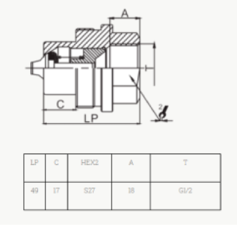

<!DOCTYPE html>
<html>
<head>
	<meta charset="UTF-8">
	<title>OilPower</title>
	<link  href="style.css" rel="stylesheet" type="text/css">
	<!-- <link href="https://cdn.jsdelivr.net/npm/bootstrap@5.0.1/dist/css/bootstrap.min.css" rel="stylesheet" integrity="sha384-+0n0xVW2eSR5OomGNYDnhzAbDsOXxcvSN1TPprVMTNDbiYZCxYbOOl7+AMvyTG2x" crossorigin="anonymous"> -->
	<link rel="shortcut icon" href="http://afclub.ru/wp-content/uploads/2019/05/Артефакт-лого-символ-1.png" type="image/png">
</head>
</html> 
<body>
    <div class="body-container">
        <p class="cataloge-main-p">Резьбовые БРС на 700 bar 3/8 дюйма</p>
      <ul class="cataloge-breadcrumb">
        <li><a href="#" class="cataloge-breadcrumb-black">Главная</a> <span class="cataloge-breadcrumb-bread">/</span></li>
        <li><a href="catalog.html">Каталог</a> <span class="divider">/</span></li>
        <li><a href="shop.html">Соединения БРС</a> <span class="divider">/</span></li>
        <li><a href="shop.html">Резьбовые БРС 700 bar</a> <span class="divider">/</span></li>
        <li class="cataloge-breadcrumb-active">Резьбовые БРС на 700 bar 3/8 дюйма</li>
      </ul>
    </div>
    <div class="shop-sidebar">
      <div class="shop-sidebar-div"><a class="shop-sidebar-div-a">Фитинги</a></div>
      <div class="shop-sidebar-div-active"><a class="shop-sidebar-div-a">Соединение БРС</a></div>
      <div class="shop-sidebar-div-more"><a class="shop-sidebar-div-a">Гидравлические БРС iso-7241a</a></div>
      <div class="shop-sidebar-div-more"><a class="shop-sidebar-div-a">Гидравлические БРС iso-16028</a></div>
      <div class="shop-sidebar-div-more"><a class="shop-sidebar-div-a">Гидравлические резьбовые БРС</a></div>
      <div class="shop-sidebar-div-more"><a class="shop-sidebar-div-a">Резьбовые БРС 700 bar</a></div>
      <div class="shop-sidebar-div-more"><a class="shop-sidebar-div-a">Гидравлические серии vep</a></div>
      <div class="shop-sidebar-div"><a class="shop-sidebar-div-a">Шаровые краны</a></div>
      <div class="shop-sidebar-div"><a class="shop-sidebar-div-a">Гидравлическая аппаратура</a></div>
      <div class="shop-sidebar-div__bottom"><a class="shop-sidebar-div-a">Гидрораспределители</a></div>
      </div>
    <div class="main-content body-container">
        <div class="more-card">
            
            <div class="more-card__body">
                <h3>Обратный клапан <br>CV-02 G1/4 (VUR;VU;FPR;Ft257;CVU-M)</h3>
               <div class="more-content__div">
                 <a>Размер тела</a><div id="more-div__line-one"></div><a>1/2 дм</a>
                </div>
                <div class="more-content__div">
                  <a>Номинальное <br> давление</a><div id="more-div__line-one"></div><a> 690 bar</a>
                 </div>
                 <div class="more-content__div">
                  <a>Номинальный <br> поток </a><div id="more-div__line-one"></div><a>  54 л/мин</a>
                 </div>
                 <div class="more-content__div">
                  <a>Номинальное <br> давление </a><div id="more-div__line-one"></div><a>  690 bar</a>
                 </div>
                <!-- <span>Номинальное <br> давление <div id="more-card-div__one"></div>  690 bar</span><br><br>
                <span>Номинальный <br> поток <div id="more-card-div__one"></div> 54 л/мин</span><br><br>
                <span>Номинальное <br> давление <div id="more-card-div__one"></div> 690 bar</span><br><br> -->
            
            <div class="more-div__elem">
              <a class="more-buttons__quest">Задайте вопрос по этому товару</a>
              <a class="more-buttons__whatsapp">Заказ в WhatsApp</a>
            </div>
          </div>
        </div>
        <div class="body-container more-content">
          <h2>Описание</h2>
          <p>Резьбовое гидравлическое быстроразъемное соединение (БРС) серии HPA для инструмента на высокое давление 3/8 дюйма</p>
          <br><br>
          <h2>Область применения</h2>
          <p>Муфты серии TGW предназначены для использования в строительно-дорожной технике, в частности гидромолотах, в составе передвижного оборудования, а также сельскохозяйственного и универсального промышленного оборудования.</p>
          <br><br>
          <h2>Особенности Муфты серии TGW </h2>
          <p>Новое клапанное исполнение позволяет избежать повреждений при высокой интенсивности потока и возникновении сильных импульсов, тем самым обеспечивая лучшие эксплуатационные показатели.
              <br><br>
            Производятся из цельного стального прута, что обеспечивает дополнительную прочность.
            В серии KZE-BA используется резьбовой механизм блокировки муфты, сопрягающийся с соответствующими резьбой на ниппеле. Две половины должны быть вручную соединены резьбовым соединением.
            <br><br>
            Новое хромовое покрытие обеспечивает надежную защиту от коррозии.
            <br><br>
            Муфты серии KZE-B подходят для совместного использования с изделиями серий GROMELLE 6000 и HOLMBURY TGW.</p>
            <br><br>
            <h2>Техническая схема</h2>
            <div>
            
             
            </div>
        </div>
    </div>
</body>